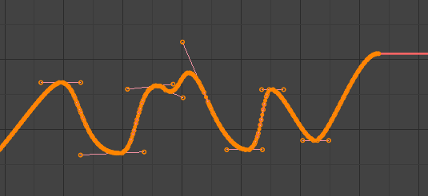

Biên Soạn -- Editing¶
Transform¶
Tham Chiếu -- Reference
- Mode
Edit Mode
- Trình Đơn -- Menu
An F-curve can be edited by transforming the locations of the keyframes.
- Move, Rotate, Scale
Like other elements in Blender, keyframes can be moved, rotated, or scaled as described in Basic Transformations.
- Extend
Todo.
Mẹo
For precise control of the keyframe position and value, you can set values in the Active Keyframe of the Sidebar region.
Bám Dính -- Snap¶
Tham Chiếu -- Reference
- Trình Đơn -- Menu
- Phím Tắt -- Hotkey
Shift-S
Keyframes can be snapped to different properties by using the Snap Keys tool.
- Khung Hình Hiện Tại -- Current Frame
Snap the selected keyframes to the Playhead.
- Giá Trị Con Trỏ -- Cursor Value
Snap the selected keyframes to the 2D Cursor.
- Khung Hình Gần Nhất -- Nearest Frame
Snap the selected keyframes to their nearest frame individually.
- Giây Gần Nhất -- Nearest Second
Snap the selected keyframes to their nearest second individually, based on the FPS of the scene.
- Dấu Mốc Gần Nhất -- Nearest Marker
Snap the selected keyframes to their nearest marker individually.
- Căn Thẳng Tay Cầm -- Flatten Handles
Flatten the Bézier handles for the selected keyframes.
Flatten Handles snapping example.¶ 
Before Flatten Handles.¶

After Flatten Handles.¶
Đối Xứng Hóa/Gương -- Mirror¶
Tham Chiếu -- Reference
- Trình Đơn -- Menu
- Phím Tắt -- Hotkey
Ctrl-M
Selected keyframes can be mirrored over different properties using the Mirror Keys tool.
- Theo Thời Gian qua Khung Hình Hiện Tại -- By Times Over Current Frame
Mirror horizontally over the playhead.
- Theo Giá Trị dùng Giá Trị của Con Trỏ -- By Values over Cursor Value
Mirror vertically over the 2D cursor.
- Theo Thời Gian qua Mốc Thời Gian 0 -- By Times over Time 0
Mirror horizontally over frame 0.
- Theo Giá Trị qua Mốc Giá Trị 0 -- By Values over Value 0
Mirror vertically over value 0.
- Theo Thời Gian dùng Dấu Mốc Được Chọn Đầu Tiên -- By Times over First Selected Marker
Mirror horizontally over the first selected marker.
Insert Keyframes¶
Tham Chiếu -- Reference
- Trình Đơn -- Menu
- Phím Tắt -- Hotkey
Ctrl-LMB, Shift-Ctrl-LMB
Ctrl-LMB inserts a keyframe to the active F-curve at the mouse position. The newly added keyframes will be selected, making it easier to quickly tweak the newly added keyframes. All previously selected keyframes are kept selected by using Shift-Ctrl-LMB.
Add F-Curve Modifier¶
Todo.
Nướng Âm Thanh thành Đường Cong-F -- Bake Sound to F-Curves¶
Tham Chiếu -- Reference
- Trình Đơn -- Menu
The Bake Sound to F-Curves operator takes a sound file and uses its sound wave to create the animation data.
- Lowest Frequency
Cutoff frequency of a high-pass filter that is applied to the audio data.
- Highest Frequency
Cutoff frequency of a low-pass filter that is applied to the audio data.
- Attack Time
Value for the hull curve calculation that tells how fast the hull curve can rise. The lower the value the steeper it can rise.
- Release Time
Value for the hull curve calculation that tells how fast the hull curve can fall. The lower the value the steeper it can fall.
- Giới Hạn -- Threshold
Minimum amplitude value needed to influence the hull curve.
- Chồng Chất/Tích Tụ -- Accumulate
Only the positive differences of the hull curve amplitudes are summarized to produce the output.
- Bổ Sung -- Additive
The amplitudes of the hull curve are summarized. If Accumulate is enabled, both positive and negative differences are accumulated.
- Hình Vuông -- Square
Cho kết quả là một đường cong hình vuông. Các giá trị âm luôn luôn có kết quả là -1 và những giá trị dương là 1
- Giới Hạn Hình Vuông -- Square Threshold
Tất cả các giá trị thấp hơn ngưỡng này sẽ cho kết quả là 0.
Jump to Keyframe¶
Todo.
Copy/Paste¶
Todo.
Duplicate¶
Todo.
Delete Keyframes¶
Todo.
Handle Type¶
Todo.
Interpolation Mode¶
Todo.
Easing Mode¶
Todo.
Decimate¶
Tham Chiếu -- Reference
- Trình Đơn -- Menu
- Trình Đơn -- Menu
The Decimate operator simplifies an F-curve by removing keyframes that influence the curve shape the least.
- Mode
Controls which method is used pick the number of keyframes to use.
- Ratio
Deletes a defined percentage of keyframes, the amount of keyframes to delete is define by the Remove property.
- Error Margin
Deletes keyframes which only allowing the F-curve to change by a defined amount. The amount of change is controlled by the Max Error Margin which controls how much the new decimated curve is allowed to deviate from the original.
Làm Sạch Khung Khóa -- Clean Keyframes¶
Tham Chiếu -- Reference
- Trình Đơn -- Menu
- Phím Tắt -- Hotkey
X
Clean Keyframes resets the keyframe tangents on selected keyframes to their auto-clamped shape, if they have been modified.

F-Curve before cleaning.¶ |

F-Curve after cleaning.¶ |
Dọn Dẹp các Kênh -- Clean Channels¶
Tham Chiếu -- Reference
- Trình Đơn -- Menu
- Phím Tắt -- Hotkey
X
Acts like the Clean Keyframes operator but will also delete the channel itself if it is only left with a single keyframe containing the default property value and it's not being used by any generative F-curve modifiers or drivers.
Ghi chú
The modified curve left after the Clean tool is run is not the same as the original, so this tool is better used before doing custom editing of F-curves and after initial keyframe insertion, to get rid of any unwanted keyframes inserted while doing mass keyframe insertion (by selecting all bones and pressing I for instance).
Smooth Keys¶
Tham Chiếu -- Reference
- Trình Đơn -- Menu
- Phím Tắt -- Hotkey
Alt-O
There is also an option to smooth the selected curves, but beware: its algorithm seems to be to divide by two the distance between each keyframe and the average linear value of the curve, without any setting, which gives quite a strong smoothing! Note that the first and last keys seem to be never modified by this tool.
|
Đường cong-F trước khi làm mịn.¶ |

Đường cong-F sau khi làm mịn.¶ |
Sample Keyframes¶
Tham Chiếu -- Reference
- Trình Đơn -- Menu
- Phím Tắt -- Hotkey
Shift-O
Việc lấy mẫu vật của một bộ các khung hình sẽ thay thế các giá trị nội suy với một khung khóa mới cho mỗi khung hình

Đường cong-F trước khi lấy mẫu vật.¶ |

Đường cong-F sau khi lấy mẫu.¶ |
Bake Curve¶
Tham Chiếu -- Reference
- Trình Đơn -- Menu
- Phím Tắt -- Hotkey
Alt-C
Baking a curve replaces it with a set of sampled points, and removes the ability to edit the curve.
Discontinuity (Euler) Filter¶
Todo.